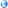

رخصة إستعمال أحرف جنو/لينوكس كينيرت
|
إصدار 1, آذار 2003
ترجم للغة العربيه: نزار عبد Translated by: Nizar Abed كتب على أيدي طاقم مشروع جنو/لينوكس كينيرت (c) جميع ألحقوق محفوظه. يسمح نسخ ونشر نسخ دقيقه لهذا ألملف, لكن يمنع تغيير فحواه بدون موافقه رسميه من أصحاب حق ألنشر. |
1. ألممتلكات ألفكريه
جميع ألحقوق ألفنيه للأحرف ألمنشوره بهذه ألرخصه محفوظه لمصمم/ي ألأحرف.
2. إستعمال ونشر
هذه ألرخصه توفر لك ألحق باستعمال ألأحرف لأهداف ألعرض وألطباعه في جميع ألوسائل وبدون تحديد .
توفر لك هذه ألرخصه ألحق لنشر نسخ من هذه ألأحرف أو جزأ منهم بدون تقييد بشرط أن لا يكون قد أجري أي تغيير أو تعديل بأي طريقه كانت , يضمن تغيير أسم ألأحرف وأسم ألمصمم , وبشرط أضافة هذه ألرخصه بدون أجراء أي تغيير فيها وذكر إسم ألمصمم وعنوان موقع ألأينترنت ألخاص به .
كل إستعمال ألذي هو ليس حسب ألشروط ألمعرفه في هذه ألرخصه يتطلب تصريح مسبق من مصممي ألأحرف.
3. عدم ألمسؤوليه
إستعمال ألأحرف هو بمسؤلية ألمستخدم ألكامله فقط. مصمم/و و/أو موزع/و ألأحرف لا يتحملوا مسؤولية أي ضرر يحصل لك نتيجة إستعمال مباشر أو غير مباشر لهذه ألأحرف , يضمن عدم ملائمه , ضرر مالي أو ضرر لطرف ثالث .
| تم تحرير وتعديل هذا ألملف لخدمة جنو/ لينوكس كينيرت, بواسطة إستعمال برامج مجانيه فقط. هذه ألصفحه تلائم ألضوابط ألعالميه  وألتي يمكن مشاهدتها بواسطة كل متصفح قانوني. |
| لينوكس ماركه تجاريه مسجله من قبل لينوس تورفالدز. يونيكس ماركه تجاريه مسجله من قبل ألمجموعه ألمفتوحه في أمريكا وألبلاد ألأخرى. شبابيك ماركه تجاريه مسجله لشركة مايكروسوفت. باقي ألماركات ألمسجله وحقوق ألنشر تتبع لأصحابها ألخاصه. |
مهم! جنو/لينوكس كينيرت مزود "كما هو" بدون أي ضمان من أي نوع , إما معبر أو مفهوم ضمنا, يشمل لكن غير محدود ألى ألضمانات ألمداوله للتجاره وألتسويق وألملاءمه لغرض محدد. عليك أن تقرأ وتوافق على حرية ألمستخدم ألكامله قبل إستخدام هذا ألتوزيع

|